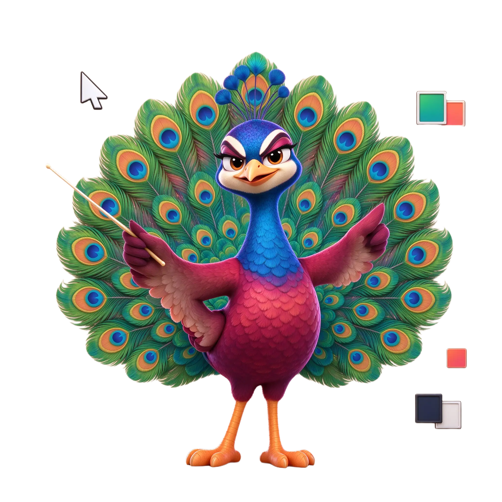
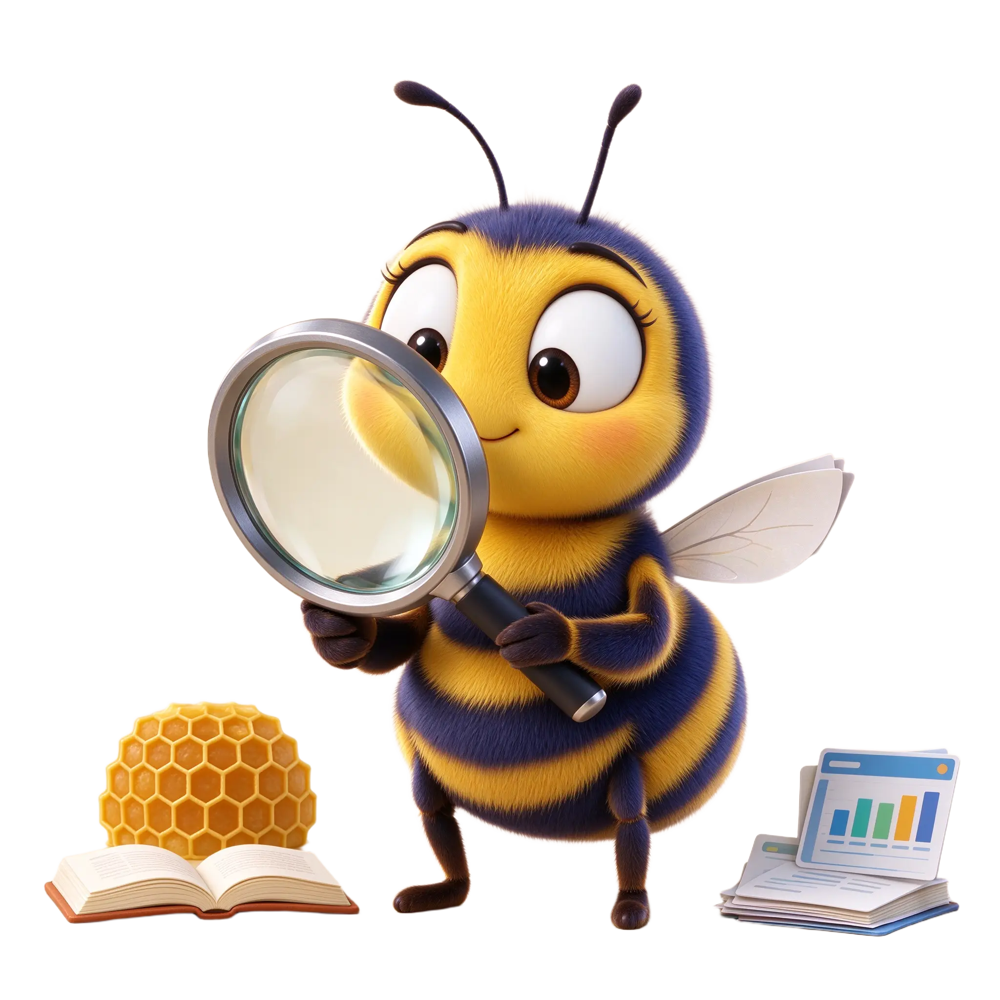
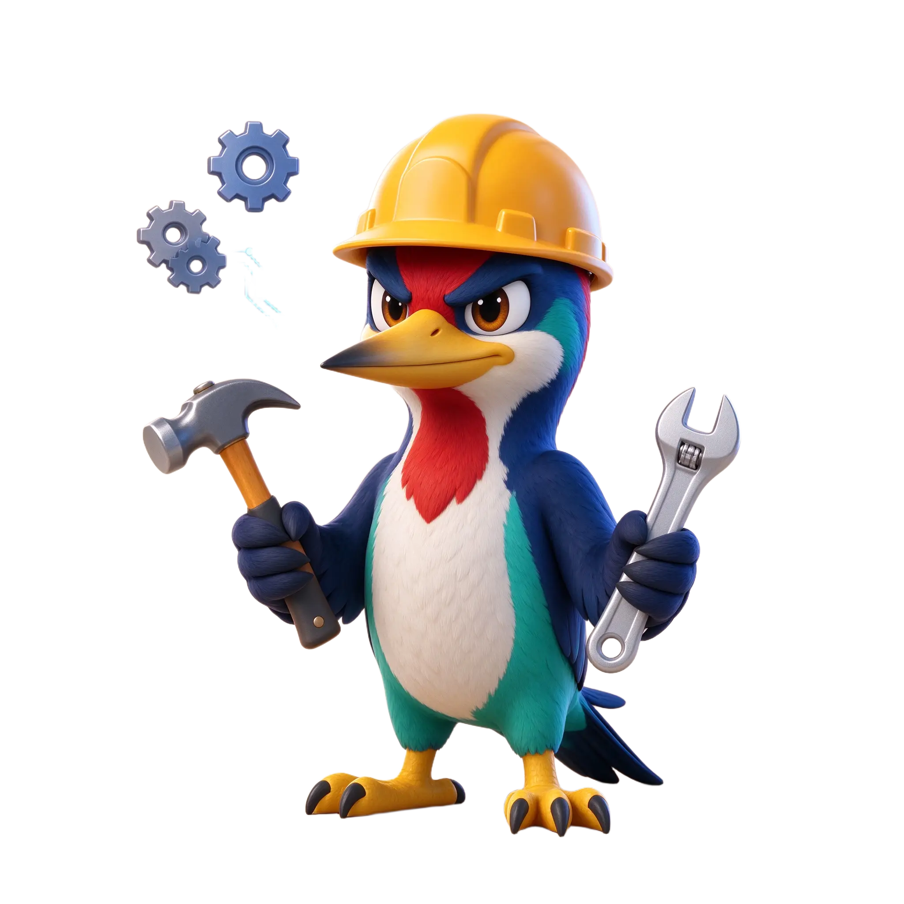
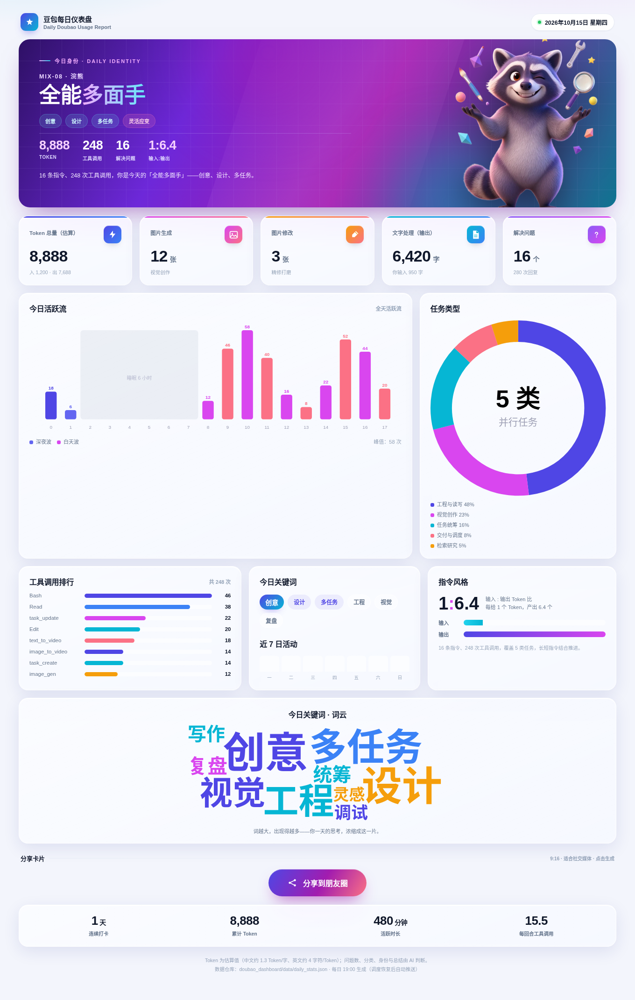

Token、图片、文字、问题数，自动统计成一张设计感十足的数据仪表盘，还会根据当天的任务风格，匹配一个专属动物身份。数据全程留在你的电脑，不上传、不外发。
从本地会话数据自动采集，无需手动记录。每个数字都可追溯、可复算。
输入与输出分别统计，按本地口径估算，区分指令与产出。
分别统计生成、修改张数，记录视觉创作的工作量。
用户输入与 AI 输出字数分开统计，看清读写比例。
按用户指令与回复轮次统计，量化一天解决了多少事。
根据任务结构自动判定 8 个动物身份，让数据更有温度。
按小时还原工作节奏，透明词云呈现当天的思考关键词。
没有单一主导任务、或覆盖四类以上时，会触发浣熊“全能多面手”；其余按主导任务匹配。



电脑、手机自适应，整页截图自动产出，社媒分享卡片一键生成。

不需要服务器，不需要数据库，生成单份报告只要几分钟。
Python 3.9 以上，安装依赖并准备截图用的 Chromium。
先用编造数据验证效果，确认渲染一切正常。
一键按“昨日 19:00—今日 18:50”窗口生成并截图。